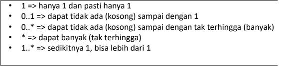

NIM 1811500009
Nama Thoriq Dariswansyah
Kelompok TI6A
Hasil saya merangkum di pertemuan 6:
- Absensi dan penilaian nilai dihitung dari kita buat link dan file pertemuan yang kita rangkum.
- Nama file ditulis angka sesuai pertemuan ke berapa /index.html dibelakangnya.
- Pertemuan ini membahas Class Diagram Terus Class Diagram itu apa? Class Diagram bisa kita gambarkan sepertihubungan antar class atau hubungan antar tabel(struktur tabel).
- Class Diagram terdiri dari Nama class, atribut, method.
- Nama class: Nama tabel.
Atribut: diisi dengan field yang menjadi key, nama field, tipe data, lebar/panjang data.
Method: diisi dengan operasi apa saja yang dilakukan pada class/tabel.
- Class Diagram juga representasi lain dari ERD dan LRS
- Stereotype : menentukan / menandakan atribute menjdai Primary Key (PK) maupun Foreign Key (FK)
Multiplicity : menentukan tingkat hubungan / kardinalitas antar class melalui association (garis hubungan antar class)

- Kita membuat Class Diagram menggunakan astah comunity
Hasil file project astah Download